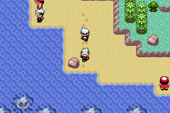
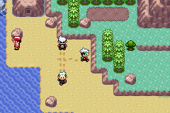
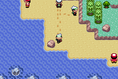
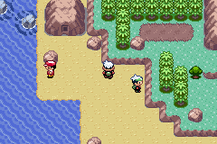
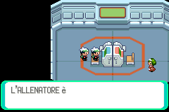
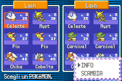

Così, sul serio
Foto scattate durante le prove: ogni personaggio in più è un altro giocatore, collegato da un'altra parte.






Come provarlo
Tre modi, e tutti e tre finiscono nella stessa partita. Mettetevi d'accordo su un numero di stanza (1–65535, uno qualsiasi: è il vostro «tavolo») e usatelo tutti.
⚠️ A tuo rischio. Il programma non scrive mai il salvataggio, ma esegue codice dentro il gioco sulla tua cartuccia originale e non ha nessuna garanzia. Se puoi, fai prima un backup del salvataggio (con un dumper di cartucce o una flash cart; in mGBA basta copiare il file .sav).
Col tuo Game Boy Advance
- Flasha una volta il Pico con
celio.uf2(BOOTSEL + trascina il file). - Su Windows, una volta: driver WinUSB per il Pico con Zadig.
- Apri il pannello in Chrome o Edge → Collega il Pico.
- GBA acceso senza cartuccia → Carica il gioco (schermo rosso, ~15 s).
- Inserisci la cartuccia a console accesa → verde → Smeraldo parte.
- Scrivi la stanza → Gioca.
In mGBA, sul PC
- Installa mGBA 0.10 o successivo.
- Nel pannello scrivi la stanza e premi «Scarica lo script per l'emulatore».
- Apri il tuo Pokémon Smeraldo (italiano o inglese: scegli quello giusto prima di scaricare), entra in partita.
- Tools → Scripting → Load script → lo script scaricato. Fatto.
GBA veri ed emulatori giocano insieme. Dentro il gioco, L+R+B apre un pannellino per cambiare stanza.
Scarica lo script dal pannelloGuarda e basta
Nessun GBA, nessun emulatore, anche da Firefox: entra come spettatore nella stanza di un amico e segui tutti sulla Mappa live di Hoenn, in tempo reale.
Gli spettatori non occupano posto: la stanza tiene 4 giocatori, gli spettatori sono illimitati.
Entra come spettatoreCome funziona
Pokémon Smeraldo non ha nessuna funzione per disegnare un altro giocatore nella tua mappa. gen3-poke-multiplayer gliela aggiunge senza toccare la cartuccia: un programma piccolissimo (~11 KB) entra nella memoria della console a ogni accensione e lavora accanto al gioco.
1 · Come entra il programma nel GBA, senza trucchi in partita
Il GBA ha una funzione di fabbrica, il multiboot: acceso senza cartuccia, accetta un programma dal cavo link. Noi carichiamo uno «stub» che si mette in un angolo di memoria che Smeraldo non usa e aspetta. Quando inserisci la cartuccia, lo stub salta dentro l'avvio del gioco subito dopo il punto in cui la memoria viene azzerata: così il nostro programma sopravvive, e Smeraldo parte normalmente con lui dentro.
Il programma si aggancia al gioco riscrivendo un solo puntatore in RAM — il vettore delle interruzioni — e da lì gira a ogni fotogramma. La cartuccia è ROM a maschera: non si può modificare nemmeno volendo, e il salvataggio non viene mai scritto. Spegni la console e non resta traccia.
2 · Perché l'amico si muove come un personaggio vero
Grazie alle decompilazioni del gioco fatte dalla comunità (pret/pokeemerald) conosciamo l'indirizzo di ogni funzione originale. Il programma non reimplementa niente: crea l'amico con la stessa funzione che il gioco usa per i suoi abitanti, e lo muove dandogli azioni («fai un passo verso nord»), non coordinate. Animazione, passi, bici e surf li disegna il motore di Smeraldo, esattamente come per un NPC.
3 · Perché internet non si nota
Non mandiamo la posizione a ogni fotogramma: mandiamo eventi, «ho iniziato un passo in questa direzione da questa casella», in 12 byte, più una correzione ogni tanto. Con 100 ms di ping l'amico è mezzo passo dietro: invisibile. Il server (relay) non capisce niente del gioco — smista pacchetti fra i giocatori della stessa stanza, e basta.
L'ultimo tratto, dal PC al GBA, perde qualche pacchetto: ogni passo viene quindi inviato due volte, e il GBA scarta la copia. È la differenza fra un amico che scivola e uno che cammina.
4 · Cosa non fa (ancora)
- Su GBA vero, per ora, solo la cartuccia di Smeraldo italiano. In emulatore vanno sia la ROM italiana sia quella inglese, anche insieme.
- L'amico si vede sulla tua mappa e nella striscia di mappa accanto che il gioco tiene caricata; più in là no.
- Su una mappa molto affollata il gioco ha posto per 2-3 amici (16 personaggi per mappa in tutto).
- Gli allenatori non ti vedono se l'amico è in mezzo: per il gioco, la vista è una collisione.
- Da emulatore non si entra nel Cable Club: scambi e lotte via internet sono fra GBA veri.
- WebUSB c'è solo su Chrome ed Edge: da Firefox e Safari si guarda e basta.
La spiegazione completa · il codice e il README tecnico su GitHub
Chi l'ha fatto
Scritto da Claude, di Anthropic
La fonte principale di questo progetto è Claude (Claude Code): il programma che gira dentro il GBA, lo stub multiboot, le estensioni al firmware del Pico, il driver seriale, il protocollo di rete, il relay, questo sito, il Cable Club via internet e la Mappa live sono stati scritti da Claude, sessione dopo sessione.
Lain ha avuto l'idea, messo l'hardware, fissato le regole («nessun trucco dentro il gioco, mai», «cartuccia italiana», «non si tocca la ROM») e fatto tutte le prove sul campo — con Hacke dall'altra parte del relay, il primo amico ad averlo provato via internet.
- pret
- le decompilazioni combacianti di Smeraldo e Rosso Fuoco: la mappa di ogni indirizzo del gioco.
- Progetto Celio
- il firmware RP2040 dell'adattatore USB-GBA, base di tutto lo strato hardware.
- smashstacking
- l'adattatore GBA-USB su cui Celio è tarato.
- agtbaskara · weimanc
- le schede link per Raspberry Pi Pico.
- endrift e mGBA
- l'emulatore con scripting Lua usato per tutto lo sviluppo.
- Martin Korth
- GBATEK, la documentazione tecnica del Game Boy Advance.
- Comunità Celio-Link (GBAtemp)
- per aver sciolto per prima lo strato hardware più ostico.